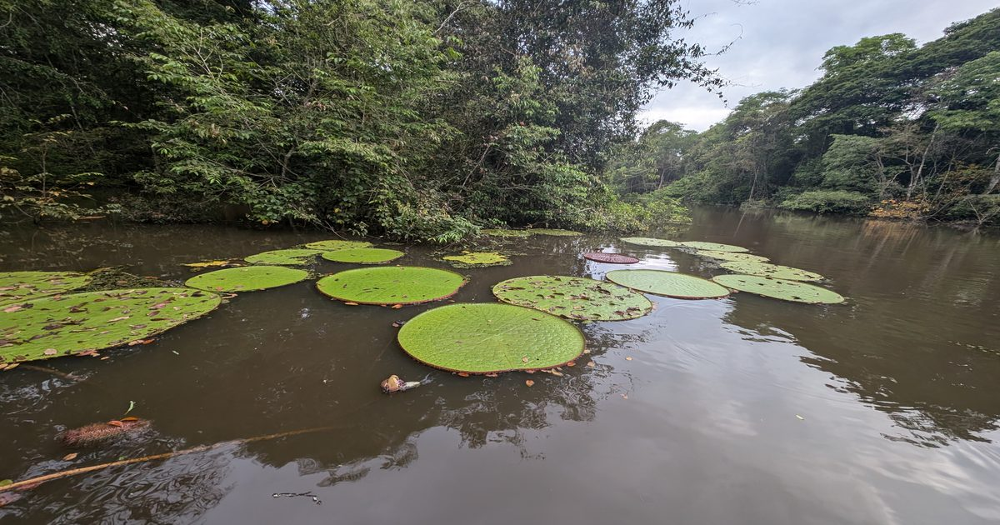

Этот гигантский вид кувшинки был обнаружен в Instagram
Они могут вырастать до более чем 6 футов в диаметре.
Сообщение This Giant Waterlily Species Was Discovered Via Instagram впервые появилось на Nautilus.

Они могут вырастать до более чем 6 футов в диаметре.
Сообщение This Giant Waterlily Species Was Discovered Via Instagram впервые появилось на Nautilus.